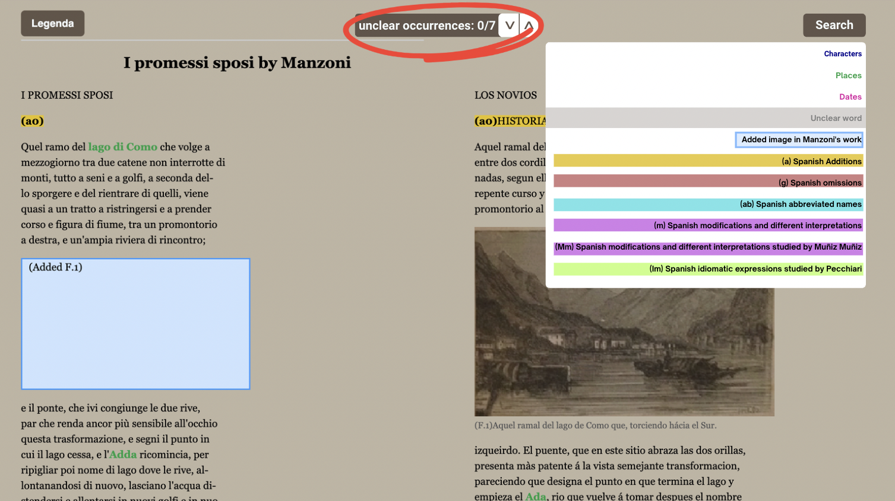
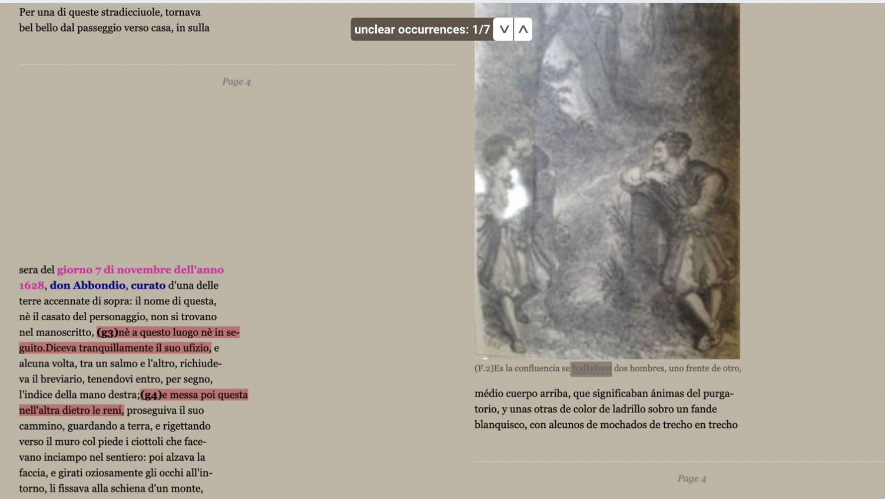
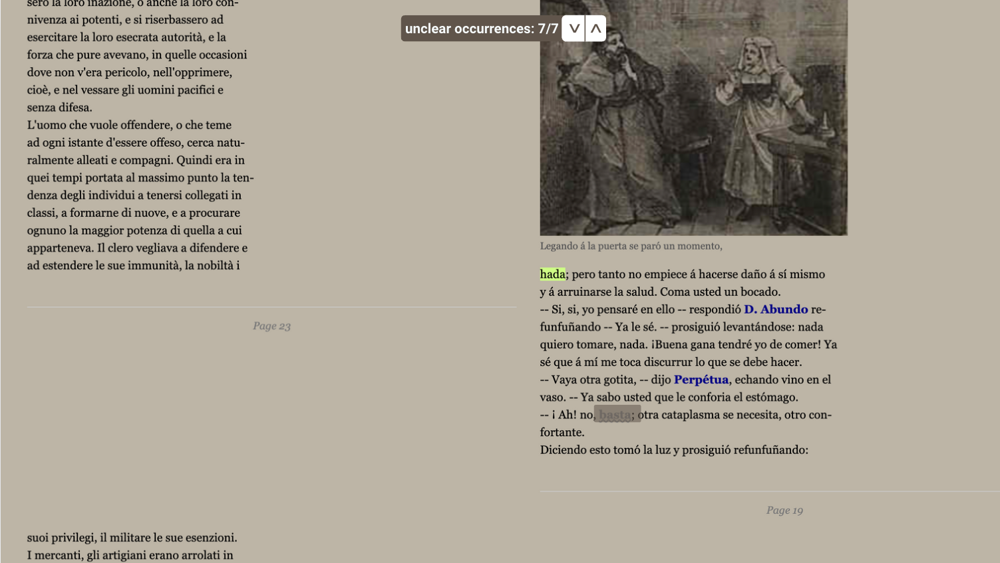

Texts Comparison
This project provides a clear and straightforward visual and graphical comparison of two carefully selected texts.
As already mentioned in the previous sections , the focus is on the first chapter of I Promessi Sposi by Alessandro Manzoni and the first chapter of Los Novios by Gallego.
Explore the full text of the first chapter of
as well as the full text of
A close examination of Chapter 1 reveals two immediate and notable differences: the length of the texts and the illustrations.
The first chapter of I Promessi Sposi extends over 36 pages, whereas Los Novios contains only 20 pages.
Another striking distinction lies in the use of imagery.
The Italian text, I Promessi Sposi, which serves as the primary reference for this project, includes no graphic illustrations.
In contrast, the Spanish translation by Gallego, composed later between 1836-37, features numerous graphic representations.
To faithfully present a digital edition that respects the original works as closely as possible, the page breaks and line breaks has been carefully preserved.
Additionally, a simple colorful legend, placed at the top-left corner of the page, provides specific information about highlighted elements:
Sites and places are shown in bold as well and in green color,
dates are ephasized in bold and in pink color.
This color-coding helps readers quickly identify these key components in both texts and better appreciate the differences between the original and its translation.
All the technical aspects are better explained in the workflow and documentation section
Observe these differences side by side through the provided
To wrap up, the so-called improved comparison was designed. It presents itself as a richer, more interactive version of the simple comparison.
Instead of just laying two texts side by side, it invites the user to explore, discover, and even play with the differences
and similarities between the texts.
At the top left, a color-coded legend guides the reader through the experience:
- Bold Blue highlights the names of characters, together with their many variations and their Spanish equivalents. So when Don Abbondio appears in Italian as D. Abbondio, curato, or simply Abbondio, all are marked in blue, just as in Spanish, where he becomes Don Abundo, D. Abundo, or cura.
- Bold Green marks the names of places, from rivers to cities, along with their Spanish renderings. The Adda river, for instance, turns into río Ada but keeps the same green emphasis
- Bold Pink is for dates, whether they specify a full day, month, and year, or just a single year.
- Bold Gray and underlined with a wavy line flags those tricky words that are blurred or damaged in the source editions. They are underlined with a wavy line to warn the reader.
- Added images are emphasised through a light blue rectangular box. Wherever the Spanish edition contains an illustration, a light blue placeholder reading “Added image” appears in the Italian texts, reminding us of the missing visual representations.
Based on the first Italian chapter of I promessi sposi, it's clear that the comparison doesn’t stop at colors. It also tracks the translator’s choices:
- (a"n") Spanish additions are highlighted in yellow and tagged with a label (a"n"), where "a" stands for addition and "n" refers to the number of the addition. Moreover, with a click on the label in the Spanish text, the user sees the corresponding point in the Italian text where the addition occurs, always marked with a label (a"n"). The same works the other way around: by clicking the label in the Italian text, the user will see the corresponding addition in the Spanish text.
- (g"n")Spanish omissions are highlighted in red and marked with a label (g"n"), where "g" stands for gap and "n" refers to the number of the omission. As for additions, with a click on the label in the Spanish text, the user sees the corresponding omitted passage in the Italian text always marked with the label (g"n") together with the omitted text. In the Italian text, the omission is always indicated with (g"n"), followed by the omitted text highlighted in red. Again, the same works the other way around.
- (ab"n")Spanish Abbreviation are highlighted in cyan and tagged with the label (ab"n"). Certain names and titles used by Manzoni in Italian have been rendered differently in Gallego’s Spanish translation, often shortened. To clarify the text and help the reader navigate the bilingual comparison, the full names and titles in Italian are highlighted in cyan and preceded by the label (ab"n"), where "ab" stands for abbreviation and "n" refers to the abbreviation number. As with additions and omissions, with a click on the label in Italian, the user discovers the corresponding shortened Spanish appellative, also marked in cyan with the same label (ab"n"). The same works in reverse.
- (m"n")Spanish modifications are highlighted in purple and tagged with a label (m"n").
Some passages in the Italian text were not added or omitted in Spanish but modified under the influence of the Spanish context and ideology.
These passages are highlighted in purple, with the modified text preceded by the label (m"n") in both texts.
As before, with a click on the label in one of the texts, the user sees the corresponding modified passage in the other (and viceversa).
Some of these changes and modifications, influenced by Spanish context or ideology, have been studied in details. As a consequence, two variants of modifications are emphasized here:- (Mm"n")Spanish interpretative modifications deeply studied by María de las Nieves Muñiz Muñiz Some modifications involving translator's interpretation of the original work of Manzoni were studied in details by the well-known philologist, translator, and Spanish Italianist María de las Nieves Muñiz Muñiz in La prima ricezione dei Promessi sposi in Spagna: traduzioni e critica. These interpretative modifications are highlighted in purple as the normal modifications, but marked with a slightly different label (Mm"n"), where "Mm" stands for modification studied by Muñiz Muñiz and "n" stands for the number of modification. As before, clicking the label in the Spanish text reveals the corresponding Italian passage and vice versa. In addition, when hovering the cursor over the label, a small popup with an explanation of the modification and reference to Muñiz Muñiz’s work appears.
- (Im"n")Spanish idiomatic modifications analysed by Beatrice Pecchiari Other modifications, in particular those at the idiomatic level, were studied and analyzed by Beatrice Pecchiari in her master’s thesis Los Novios. La ricezione dei Promessi sposi nella Spagna dell’Ottocento. Certain Italian idioms used by Manzoni were translated into different Spanish idioms by Gallego, which didn't always have exactly the same meaning. These are highlighted in cucumber milk and marked with the label (Im"n"), where "Im" stands for idiomatic modifications and "n" stands for the number of modifications. As before, clicking the label shows the corresponding passage in the other text visible in the column next to the one the user is focusing on, and hovering the cursor over it reveals a small popup explaining the idiomatic modification with reference to Pecchiari’s study.
The result is a dynamic reading experience. Instead of passively comparing two columns of text, the user actively navigates through the additions,
gaps, abbreviations, and subtle shifts in meaning. Each click, each highlight, reveals how a 19th-century Italian masterpiece was transformed for a Spanish-speaking audience.
All the technical aspects are better explained in the workflow and documentation section.
Observe these side by side differences related both to the structure level and to the semantic and idiomatic level of the texts,
through the provided
Further developments
Think about a future version of the project where, with just a single word typed into a search bar, the entire text opens up in new ways.
Additions, omissions, modifications, abbreviations, unclear words, characters, dates and places, all the carefully marked elements, could immediately reveal themselves, highlighted at fingertips.
Whether the user is an expert researcher or a simply curious reader, he or she can dive straight into the material, filter what he or she is looking for and save precious time.
In just a moment, the user gains a clear, powerful overview of all the elements he or she cares about.
This is an invitation to explore, discover, and interact with the text in a whole new way.
Once the user clicks the “search” button located at the top-right corner of the page, he or she can choose one of several filter options for the research.
In this case, “unclear word” is selected among the available categories: additions, omissions, modifications, abbreviations, unclear words, characters, dates, and places.
{kind=link}
{kind=link}
A label then appears at the top-center of the page, indicating which filter option has been applied and how many occurrences of that option have been found.

{kind=link}
The user can also keep track of these occurrences and navigate through them easily using the arrow buttons, positioned next to the label, which allow quick movement to the previous or next occurrence.

{kind=link}
In fact, in this instance, the identified occurrences for “unclear word” are seven (0/7, 1/7...7/7), and the user has the chance to move through them from the first to the last.

{kind=link}